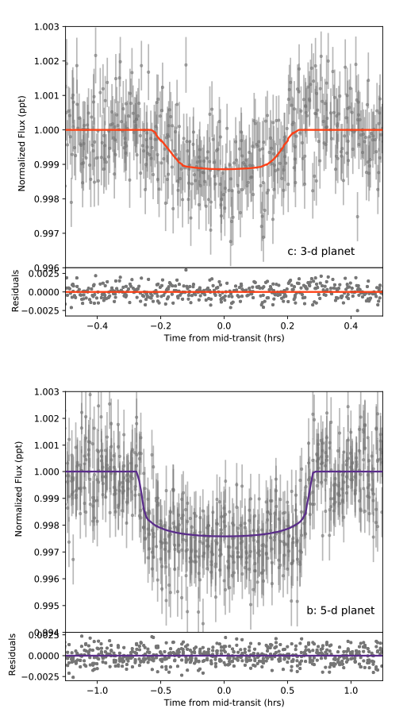
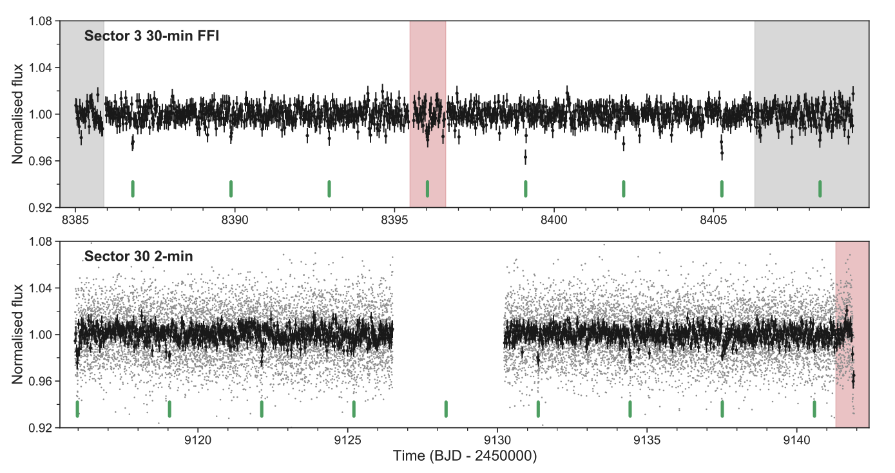
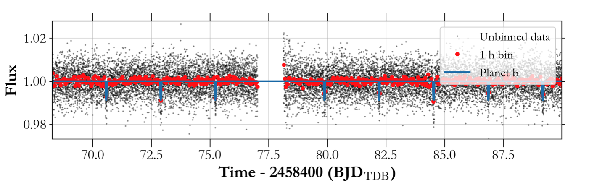

STATUS UPDATE: Check out our new outreach products
Welcome TESS followers! This week we are looking at three papers from the archive,
A Second Planet Transiting LTT~1445A and a Determination of the Masses of Both Worlds (Winters et. al., 2021) :
In this paper the authors present the discovery of a new world orbiting LTT 1445A, the primary star in a hierarchical triple M-dwarf star system located at a distance of 6.86 parsecs. The star is roughly a quarter the mass of our Sun, and is known to host LTT 1445Ab, a transiting planet with an orbital period of 5.4 days.
The second planet, LTT 1445Ac, was discovered by the authors using TESS data, and was found to have an orbital period of 3.1 days.
Utilizing radial velocity measurements taken from additional facilities, the mass and radius of the two planet were determined. LTT 1445Ab has a mass of 2.87 MEarth and a radius of 1.304 REarth, consistent with an Earth-like composition of 33% iron and 67% magnesium silicate. LTT 1445Ac has a mass of 1.54 MEarth and a minimum radius of 1.15 REarth.
The orbits of the two planets are consistent with being circular, but they are mutually inclined by at least 2.25 degrees.
Photometry and spectroscopy of the three stars in the system indicate that LTT 1445C (0.161 MSun) is likely the source of the 1.4 day rotation period, whilst LTT 1445B (0.215 MSun) has a rotation period of 6.7 days. The planet host star, LTT 1445A, has a likely rotation period of 85 days.
All data collected on this triple M-dwarf system, indicate that it is in a special evolutionary stage where the most massive M dwarf has spun down, the intermediate mass M dwarf is in the process of spinning down, while the least massive stellar component has not yet begun to spin down.
A large sub-Neptune transiting the thick-disk M4V TOI-2406 (Wells et al., 2021) :
In this paper the authors report on the discovery and validation of a sub-Neptune planet orbiting TOI-2406, a mid-M dwarf.
The host star properties were inferred using its near-infrared spectrum, spectral energy distribution, and Gaia parallax measurement. The host was found to be a metal-poor M4V star, at a distance of 56 pc, with a sub-solar metallically of [Fe/H] = -0.38, and is a member of the thick disc.
Multi-band photometry were used to confirm that the transit event is on-target and achromatic, and the authors statistically validated the TESS signal as a transiting exoplanet. Planet properties were determined via a global transit model of the TESS and ground-based time-series data. The planet is a relatively large sub-Neptune for the M-dwarf population, has a radius of 2.94 R⊕, a period of 3.077 days, and a transit depth of 2%.
Large sub-Neptune planets don't tend to occur around the cooler stars in the Galaxy, and it is even more unlikely when those stars are metal-poor. This system is therefore very interesting and presents a benchmark for large-planet formation around metal-poor, low-mass stars. Please see the paper for more information about this fascinating system.
TOI-532b: The Habitable-zone Planet Finder confirms a Large Super Neptune in the Neptune Desert orbiting a metal-rich M dwarf host (Kanodia et. al., 2021) :
TOI-532b has been confirmed as a planet using a combination of precise near-infrared radial velocities with the Habitable-zone Planet Finder, TESS light curves, ground-based photometric follow-up, and high-contrast imaging. Examination of these data has led to the determination that TOI-532 is a faint, metal-rich M dwarf, with an effective temperature of 3957 K, and a metallicity of [Fe/H] = 0.38.
The star is host to a transiting gaseous planet with a period of 2.3 days, radius of 5.82 R⊕, and a mass of 61.5 M⊕. This planet is the most massive super Neptune detected around an M dwarf with both mass and radius measurements, and it bridges the gap between the Neptune-sized planets and the heavier Jovian planets known to orbit M dwarfs. See this paper for more detail.

Fig. 1: Taken from Winters et. al., (2021). Combined transits of LTT 1445Ac (top) and LTT 1445Ab (bottom) observed with TESS. The data have been de-blended to account for the BC component, and are shown in gray, while the orange and purple lines indicate the models for LTT 1445Ac and LTT 1445Ab.

Fig. 2: Taken from Wells et. al., (2021). Sector 3 light curve created from FFIs (top) and the Sector 30 2-minute light curve (bottom). The 2-minute data points (grey) have been binned by 15 to produce the black points, with error bars corresponding to the standard deviation in the bins, which match the FFI light curve cadence of 30 min. Regions marked in red were excluded from the analysis: In Sector 3, there were poor-quality engineering data between orbits; and in Sector 30, a significant trend at the end was possibly caused by scattered light. Regions marked in grey correspond to data taken outside of science data acquisition for testing purposes but used in the analysis. One transit occurred in this period, towards the end of Sector 3. The transits of TOI-2406 b are labelled with green markers below the light curves.

Fig. 3: Taken from Kanodia et. al., (2021). Short cadence (2 minute) time series TESS PDCSAP photometry (without de-trending) from Sector 6, with the binned data (in 1 hour bins), along with the TOI-532b transits overlaid in blue.